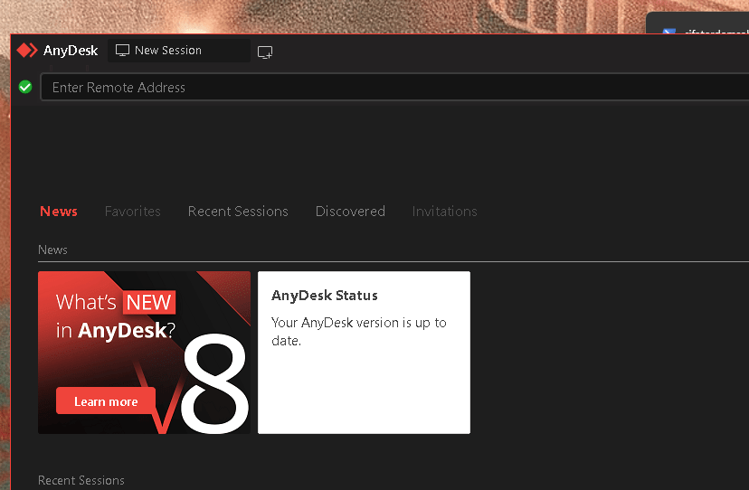
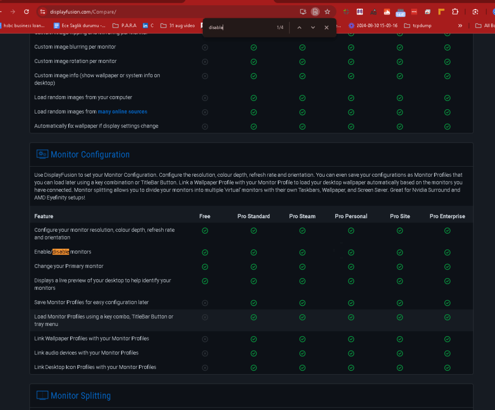
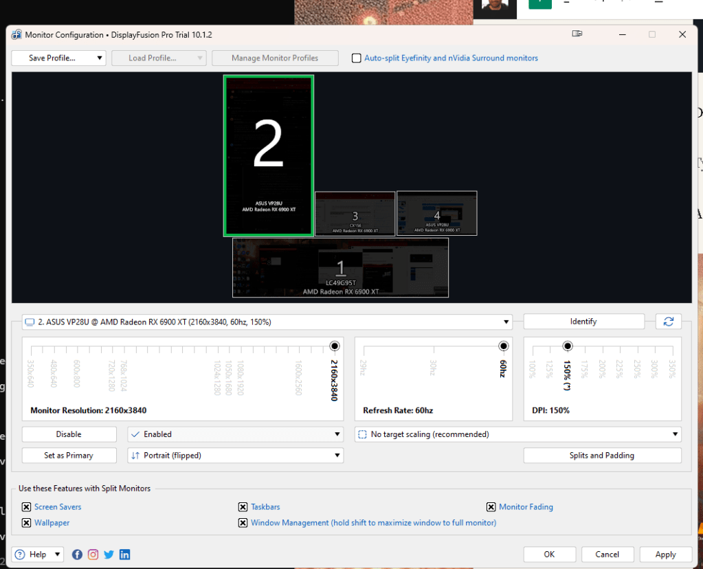
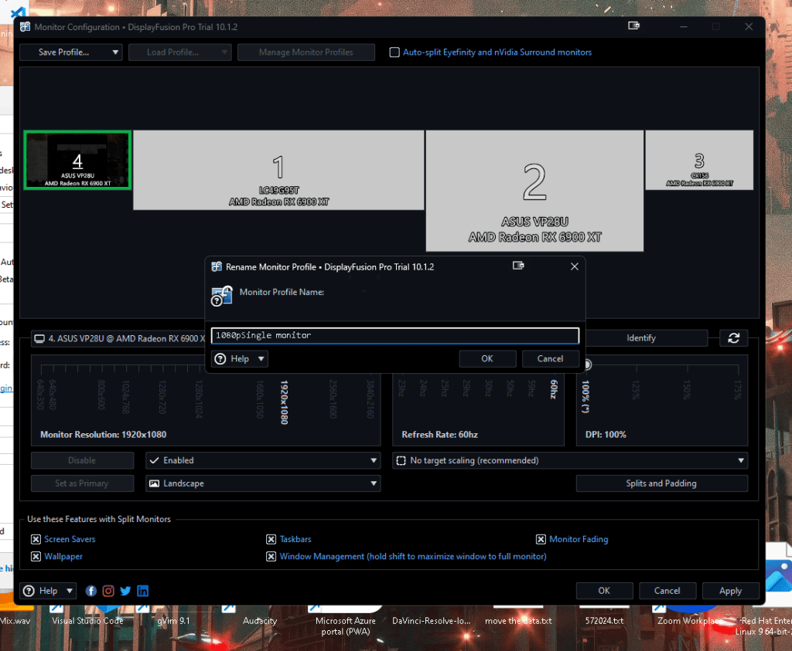
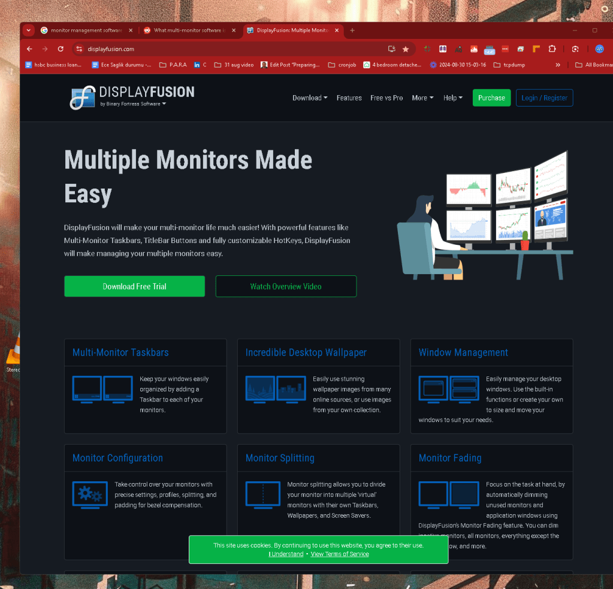
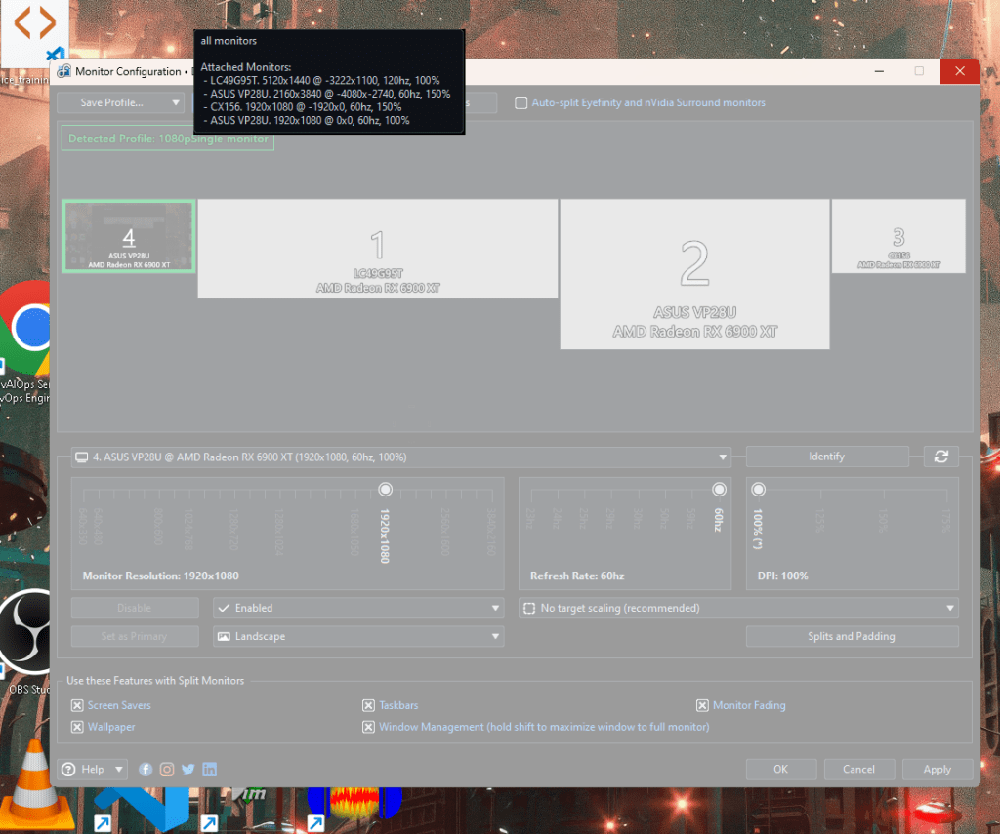

Maximizing Focus with AnyDesk: Connecting to a 4-Monitor Workstation and Focusing on One Screen
In today’s digital world, many professionals find themselves working with multiple monitors to enhance productivity and multitasking. While this setup can significantly improve efficiency, it can also become a source of distraction. When working remotely, especially with tools like AnyDesk, managing a multi-monitor setup can be a bit overwhelming. This post will guide you through how to use AnyDesk to connect to a 4-monitor workstation and focus on just one screen, minimizing distractions and enhancing concentration.
Why Use AnyDesk for Remote Access?
AnyDesk is a lightweight remote desktop application that allows you to connect to your workstation from anywhere in the world. It’s known for its fast performance, ease of use, and security features. For those who have a multi-monitor setup, AnyDesk provides the flexibility to choose which monitors to display during a remote session. This feature is especially useful when you want to focus on a single task without the clutter of additional screens.
Setting Up AnyDesk to Connect to a Multi-Monitor Workstation
Before diving into how to manage your monitors, let’s first ensure your AnyDesk setup is ready for remote work:
-
Download and Install AnyDesk: If you haven’t already, download AnyDesk from the official website and install it on both your local machine and the workstation you wish to connect to.
-
Configure AnyDesk for Remote Access:
-
Open AnyDesk on the workstation (remote PC) you want to connect to.
-
Note the AnyDesk address displayed on the main screen – you’ll need this to connect remotely.
-
Ensure that AnyDesk is set to start with Windows so that you can access it even after a reboot.

-
Connect to Your Workstation:
-
Open AnyDesk on your local machine and enter the AnyDesk address of the workstation.
-
Accept the connection request on the workstation, or configure unattended access for a seamless connection experience.
-
RATIONALE
Studio MOVE >>> To Home >>> always on >>> connect and work on CRC >>> ChatGpt >> NAS
Focusing on a Single Monitor with AnyDesk
Source > https://www.reddit.com/r/buildapc/comments/cby4id/what_multimonitor_software_is_everyone_using/
when logged in all the monitors aare active i need to turn them off > no much less confusion

Disable is here >

Progile single monitor

Any desk does not have a monitor management software!

Now that you’re connected to your 4-monitor workstation, you might find the sheer number of screens overwhelming. Here’s how you can narrow down your focus to a single monitor:
-
Switch Between Monitors:
-
Once connected, AnyDesk typically displays all monitors by default. To focus on a single screen, click on the monitor icon in the AnyDesk toolbar at the top of the window.
-
This will give you a drop-down menu where you can select which monitor you want to display. Choose the monitor that you wish to focus on.
-
Disable Additional Monitors:
-
To avoid any distractions from other monitors, you can disable them through the display settings on your remote workstation.
-
Right-click on your desktop and select Display settings.
-
From here, identify the monitors you want to disable and select Disconnect this display from the dropdown menu under Multiple displays.
-
This step ensures that even if you accidentally move your mouse to the edges of your screen, the other monitors won’t distract you.
-
Maximize Your Focus:
-
With only one monitor enabled, maximize your application window for a full-screen experience.
-
If you’re working on a specific task, such as writing or analyzing data, consider using tools or applications that support a “focus mode” to further minimize distractions.
Benefits of Focusing on One Monitor
-
Reduced Cognitive Load: Working with multiple monitors often means juggling different tasks simultaneously, which can lead to cognitive overload. By focusing on a single monitor, you streamline your workflow and reduce the mental strain associated with multitasking.
-
Minimized Distractions: Turning off or ignoring additional monitors eliminates visual clutter. This helps in reducing distractions, allowing you to concentrate better on the task at hand.
-
Improved Performance: Focusing on a single screen can enhance your performance on specific tasks that require deep work and concentration, such as coding, writing, or design work.
Tips for Maintaining Focus During Remote Sessions
-
Schedule Breaks: Use the Pomodoro technique or similar time management methods to maintain focus for a set period and then take short breaks. This helps prevent burnout and maintains productivity.
-
Use Noise-Canceling Headphones: Eliminate auditory distractions by using noise-canceling headphones or playing focus-enhancing background music.
-
Set Clear Goals: Before starting your session, outline clear, achievable goals for what you want to accomplish. This keeps you on track and reduces the temptation to switch tasks or monitors.
Conclusion
Using AnyDesk to connect to a multi-monitor workstation doesn’t mean you have to be overwhelmed by numerous screens. By focusing on a single monitor, you can create a more controlled, distraction-free environment that enhances productivity and concentration. Remember, the key to effective remote work is not just about the tools you use, but also how you use them to create the optimal working conditions.
By following these steps, you can make the most out of your remote sessions, stay focused, and maintain high productivity levels.
2 profiles move between them and leave the machine on single monitor when i leave is also a faster solution

Imported from rifaterdemsahin.com · 2024